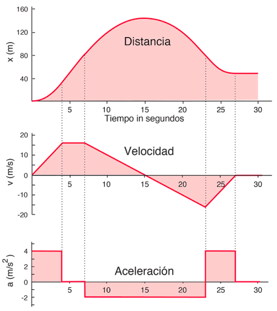
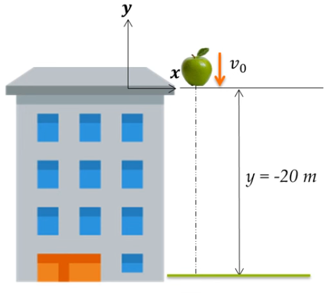
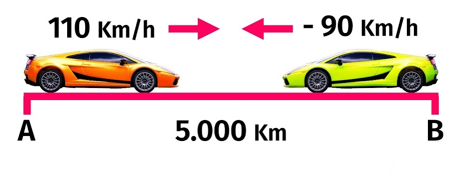
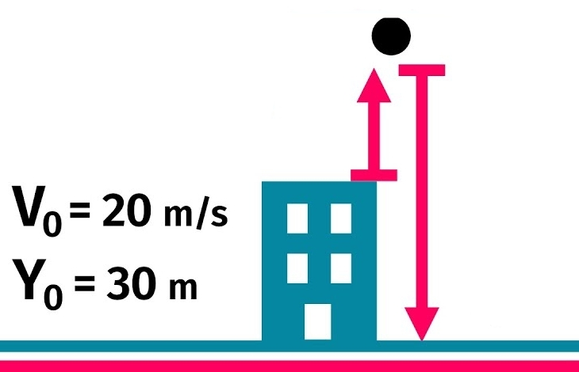
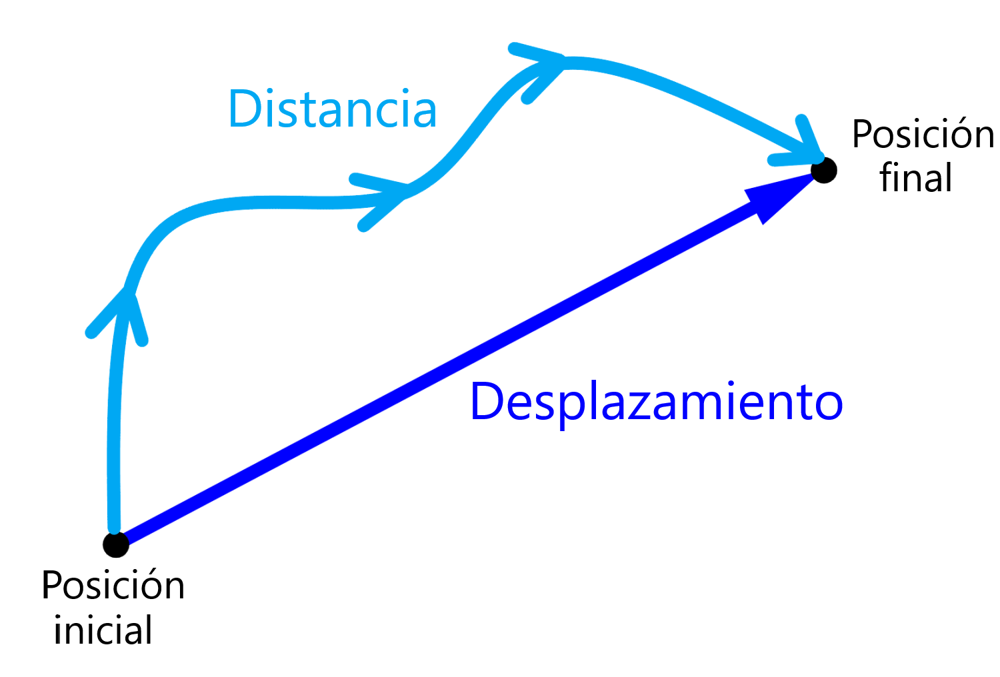
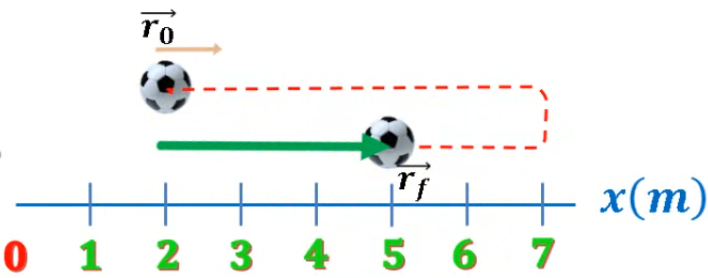
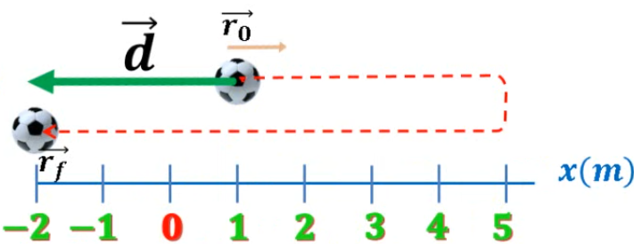
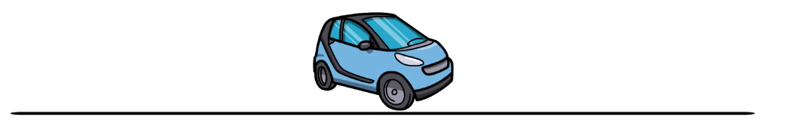

Vectores y cantidades físicas en Cinemática
Definiciones de conceptos
Posición
La posición de un objeto en el espacio se puede definir como un vector que va desde un punto de referencia hasta el objeto.

Velocidad
La velocidad de un objeto es un vector que indica la rapidez con la que se mueve un objeto y la dirección en la que se mueve.
Conceptualmente, la velocidad es la tasa de cambio de la posición de un objeto en el tiempo.

Aceleración
La aceleración de un objeto es un vector que indica la rapidez con la que cambia la velocidad de un objeto y la dirección en la que cambia.
Relacion con las derivadas y antiderivadas
La velocidad es la derivada de la posición con respecto al tiempo y la aceleración es la derivada de la velocidad con respecto al tiempo. O inversamente, la posición es la antiderivada de la velocidad y la velocidad es la antiderivada de la aceleración.

Deducción de las ecuaciones de movimiento
Empezemos con un vector aceleración: \[ \vec{a} = a_x \hat{ı} + a_y \hat{ȷ} \]
Si integramos esta ecuación general respecto al tiempo, obtenemos la velocidad: \[ \vec{v} = \int \vec{a} dt = \int a_x dt \hspace{0.3em} \hat{ı} + \int a_y dt \hspace{0.3em} \hat{ȷ} \]
\[ \vec{v} = a_x \cdot t \hspace{0.3em} \hat{ı} + a_y \cdot t \hspace{0.3em} \hat{ȷ} + C \] \[ \vec{v} = a_x t \hspace{0.3em} \hat{ı} + a_y t \hspace{0.3em} \hat{ȷ} + \vec{v}_0 \]
Si integramos la velocidad respecto al tiempo, obtenemos la posición: \[ \vec{v} = a_x t \hspace{0.3em} \hat{ı} + a_y t \hspace{0.3em} \hat{ȷ} + \vec{v}_0 \]
\[ \vec{r} = \int \vec{v} dt = \int (a_x t \hspace{0.3em} \hat{ı} + a_y t \hspace{0.3em} \hat{ȷ} + \vec{v}_0) dt \]
\[ \vec{r} = \frac{1}{2} a_x t^2 \hspace{0.3em} \hat{ı} + \frac{1}{2} a_y t^2 \hspace{0.3em} \hat{ȷ} + \vec{v}_0 t + C_2 \]
Ecuación de itinerario
\[ \vec{r} = \frac{1}{2} a_x t^2 \hspace{0.3em} \hat{ı} + \frac{1}{2} a_y t^2 \hspace{0.3em} \hat{ȷ} + \vec{v}_0 t + \vec{r}_0 \]
Ejemplo
Se deja caer una manzana desde una altura de 20 m. Calcular la ecuación de itinerario de la manzana.

La gravedad es de \(a = -9.8 \hspace{0.3em} m/s^2\)
Por lo tanto la función de aceleración es: \[ \vec{a} = 0 \hspace{0.3em} \hat{ı} - 9.8 \hspace{0.3em} \hat{ȷ} \hspace{0.3em} \left [ \frac{m}{s^2} \right ] \] \[ \vec{a} = - 9.8 \hspace{0.3em} \hat{ȷ} \hspace{0.3em} \left [ \frac{m}{s^2} \right ] \]
Ahora integramos la aceleración para obtener la velocidad: \[ \vec{v} = \int \vec{a} dt = \int -9.8 \hspace{0.3em} \hat{ȷ} dt \] \[ \vec{v} = -9.8 \hspace{0.3em} t \hspace{0.3em} \hat{ȷ} + \vec{v}_0 \hspace{0.3em} \left [ \frac{m}{s} \right ] \]
No hay velocidad inicial, por lo que \(\vec{v}_0 = 0\hspace{0.3em} \hat{ı}+0\hspace{0.3em} \hat{ȷ}\)
\[ \vec{v} = -9.8 \hspace{0.3em} t \hspace{0.3em} \hat{ȷ} \hspace{0.3em} \left [ \frac{m}{s} \right ] \] Integramos nuevamente para obtener la posición: \[ \vec{r} = \int \vec{v} dt = \int -9.8 \hspace{0.3em} t \hspace{0.3em} \hat{ȷ} dt \]
\[ \vec{r} = -4.9 \hspace{0.3em} t^2 \hspace{0.3em} \hat{ȷ} + \vec{r}_0 \hspace{0.3em} \left [ m \right ] \]
Recordemos que la manzana se deja caer desde una altura de 20 m, pero el sistema de referencia está ubicado en el techo del edificio, por lo que la posición inicial es 0 \[\vec{r}_0 = 0\hspace{0.3em} \hat{ı}+0\hspace{0.3em} \hat{ȷ} \hspace{0.3em} \left [ m \right ]\]
Entonces la función posición es: \[ \vec{r} = -4.9 \hspace{0.3em} t^2 \hspace{0.3em} \hat{ȷ} \hspace{0.3em} \left [ m \right ] \]
Ejercicio 1
Dos autos están separados por 5000 km. Salen al mismo tiempo y se mueven en direcciones opuestas. Uno de los autos se mueve a 110 km/h y el otro a 90 km/h. Calcula la función de itinerario de ambos autos.

Asignemos nombres a los autos A y B.
Auto A
No presenta aceleración: \[ \vec{a}_A = 0 \hspace{0.3em} \hat{ı} \hspace{0.3em} \left [ \frac{km}{h^2} \right ] \] Integrando: \[ \vec{v}_A = \int \vec{a}_A dt = \int 0 \hspace{0.3em} \hat{ı} dt = 0 \hspace{0.3em} \hat{ı} + \vec{v}_{A0} \hspace{0.3em} \left [ \frac{km}{h} \right ] \] \[ \vec{v}_A = \vec{v}_{A_0} \hspace{0.3em} \left [ \frac{km}{h} \right ] \]
La velocidad inicial del auto A es de 110 km/h, por lo que: \[ \vec{v}_A = 110 \hspace{0.3em} \hat{ı} \hspace{0.3em} \left [ \frac{km}{h} \right ] \] Integrando nuevamente: \[ \vec{r}_A = \int \vec{v}_A dt = \int 110 \hspace{0.3em} \hat{ı} dt = 110t \hspace{0.3em} \hat{ı} + \vec{r}_{A_0} \hspace{0.3em} \left [ km \right ] \] La posición inicial del auto A es de 0 km, por lo que: \[ \vec{r}_A = 110t \hspace{0.3em} \hat{ı} \hspace{0.3em} \left [ km \right ] \]
Auto B
No presenta aceleración: \[ \vec{a}_B = 0 \hspace{0.3em} \hat{ı} \hspace{0.3em} \left [ \frac{km}{h^2} \right ] \] Integrando: \[ \vec{v}_B = \int \vec{a}_B dt = \int 0 \hspace{0.3em} \hat{ı} dt = 0 \hspace{0.3em} \hat{ı} + \vec{v}_{B_0} \hspace{0.3em} \left [ \frac{km}{h} \right ] \]
\[ \vec{v}_B = \vec{v}_{B_0} \hspace{0.3em} \left [ \frac{km}{h} \right ] \]
La velocidad inicial del auto B es de 90 km/h, por lo que: \[ \vec{v}_B = -90 \hspace{0.3em} \hat{ı} \hspace{0.3em} \left [ \frac{km}{h} \right ] \]
Integrando nuevamente: \[ \vec{r}_B = \int \vec{v}_B dt = \int -90 \hspace{0.3em} \hat{ı} dt = -90t \hspace{0.3em} \hat{ı} + \vec{r}_{B_0} \hspace{0.3em} \left [ km \right ] \]
La posición inicial del auto B es de 5000 km, por lo que: \[ \vec{r}_B = -90t \hspace{0.3em} \hat{ı} + 5000 \hspace{0.3em} \hat{ı} \hspace{0.3em} \left [ km \right ] \]
Ejercicio 2
Se lanza un cuerpo verticalmente hacia arriba con una velocidad de 20 m/s desde el tejado de un edificio de 30 m de altura. Calcular la función de itinerario del cuerpo.

La aceleración de la gravedad es de \(a = -9.8 \hspace{0.3em} m/s^2\)
Por lo tanto la función de aceleración es: \[ \vec{a} = 0 \hspace{0.3em} \hat{ı} - 9.8 \hspace{0.3em} \hat{ȷ} \hspace{0.3em} \left [ \frac{m}{s^2} \right ] \]
\[ \vec{a} = - 9.8 \hspace{0.3em} \hat{ȷ} \hspace{0.3em} \left [ \frac{m}{s^2} \right ] \] Integramos: \[ \vec{v} = \int \vec{a} dt = \int -9.8 \hspace{0.3em} \hat{ȷ} dt \] \[ \vec{v} = -9.8 \hspace{0.3em} t \hspace{0.3em} \hat{ȷ} + \vec{v}_0 \hspace{0.3em} \left [ \frac{m}{s} \right ] \]
La velocidad inicial es de 20 m/s hacia arriba, por lo que \(\vec{v}_0 = 0\hspace{0.3em} \hat{ı}+20\hspace{0.3em} \hat{ȷ}\)
\[ \vec{v} = -9.8 \hspace{0.3em} t \hspace{0.3em} \hat{ȷ} + 20\hspace{0.3em} \hat{ȷ} \hspace{0.3em} \left [ \frac{m}{s} \right ] \] Finalmente, integramos para obtener la posición: \[ \vec{r} = \int \vec{v} dt = \int (-9.8 \hspace{0.3em} t \hspace{0.3em} \hat{ȷ} + 20\hspace{0.3em} \hat{ȷ}) dt \]
\[ \vec{r} = -4.9 \hspace{0.3em} t^2 \hspace{0.3em} \hat{ȷ} + 20t \hspace{0.3em} \hat{ȷ} + \vec{r}_0 \hspace{0.3em} \left [ m \right ] \] La posición inicial es de 30 m, por lo que \(\vec{r}_0 = 0\hspace{0.3em} \hat{ı}+30\hspace{0.3em} \hat{ȷ}\) \[ \vec{r} = -4.9 \hspace{0.3em} t^2 \hspace{0.3em} \hat{ȷ} + 20t \hspace{0.3em} \hat{ȷ} + 30\hspace{0.3em} \hat{ȷ} \hspace{0.3em} \left [ m \right ] \]
Distancia recorrida y desplazamiento
La distancia recorrida es la longitud total del camino recorrido por un objeto. El desplazamiento es la longitud y la dirección desde el punto de partida hasta el punto final.

Para calcular la distancia recorrida, se suma la magnitud de los desplazamientos en cada intervalo de tiempo. \[ d = \sum | \Delta \vec{r} | \] Para calcular el desplazamiento, se puede restar los vectores de posición inicial y final. \[ \Delta \vec{r} = \vec{r}_f - \vec{r}_i \]
Ejemplo sencillo
Una pelota se mueve describiendo la siguiente trayectoria (no hay altura). Determine la distancia recorrida y el desplazamiento.

El vector \(\vec{r}_0\) es de 2 m y el vector \(\vec{r}_f\) es de 5 m en la dirección positiva del eje x. \[ \vec{r}_0 = 2 \hat{ı} \hspace{0.3em} [m] \] \[ \vec{r}_f = 5 \hat{ı} \hspace{0.3em} [m] \] La distancia recorrida es: \[ d = | \vec{r}_f| + | \vec{r}_0 | = | 5 \hat{ı} | + | 2 \hat{ı} | = 5 + 2 = 7 \hspace{0.3em} [m] \] El desplazamiento es: \[ \Delta \vec{r} = \vec{r}_f - \vec{r}_0 = 5 \hat{ı} - 2 \hat{ı} = 3 \hat{ı} \hspace{0.3em} [m] \]
Ejercicio 3
Una pelota se mueve describiendo la siguiente trayectoria (no hay altura). Determine la distancia recorrida y el desplazamiento.

Definamos nuevamente los vectores de posición inicial y final. \[ \vec{r}_0 = 1 \hat{ı} \hspace{0.3em} [m] \] \[ \vec{r}_f = -2 \hat{ı} \hspace{0.3em} [m] \]
Para sacar la distancia recorrida, podemos dividir el camino en dos partes. La primera parte desde 1 m hasta 5 m y la segunda parte desde 5 m hasta -2 m.
Para este proposito podemos crear vectores de posición intermedios restando la magnitud final de la inicial. \[ \vec{r}_1 = 5\hat{ı} - 1\hat{ı} = 4 \hat{ı} \hspace{0.3em} [m] \] \[ \vec{r}_2 = 5 \hat{ı} - ( -2 ) \hat{ı} =7\hat{ı} \hspace{0.3em} [m] \] La distancia recorrida es: \[ d = | \vec{r}_1 | + | \vec{r}_2 | = | 4 \hat{ı} | + | 7 \hat{ı} | = 4 + 7 = 11 \hspace{0.3em} [m] \]
El desplazamiento es: \[ \Delta \vec{r} = \vec{r}_f - \vec{r}_0 = -2 \hat{ı} - 1 \hat{ı} = -3 \hat{ı} \hspace{0.3em} [m] \]
Velocidad media y aceleración media
La velocidad media es el promedio de la velocidad a lo largo de un intervalo de distancia y de tiempo. \[ \vec{v}_{\text{media}} = \frac{\Delta \vec{r}}{\Delta t} \] \[ \vec{v}_{\text{media}} = \frac{\vec{r}_f - \vec{r}_0}{t_f - t_0} \]
Aceleración media
Misma definición que la velocidad media, pero con la aceleración. \[ \vec{a}_{\text{media}} = \frac{\Delta \vec{v}}{\Delta t} \] \[ \vec{a}_{\text{media}} = \frac{\vec{v}_f - \vec{v}_0}{t_f - t_0} \]
Velocidad Instantánea y aceleración instantánea
La velocidad instantánea es la velocidad en un punto específico en el tiempo. Se puede calcular como la derivada de la posición con respecto al tiempo evaluada en un punto específico. \[ \vec{v} = \frac{d\vec{r}}{dt} \] \[ \vec{a} = \frac{d\vec{v}}{dt} \]
Ejemplo
La posición de un auto que se mueve a lo largo del eje x está dada (en kilometros) por la función \(r(t) = 1.5t^2 + 9.75\). Calcular la velocidad y la aceleración del auto en el tiempo \(t = 2 \text{ horas }\).

La velocidad es la derivada de la posición con respecto al tiempo. \[ v = \frac{dr}{dt} = \frac{d(1.5t^2 + 9.75)}{dt} = 3t \hspace{0.3em} [km/h] \] Evaluando en \(t = 2 h\): \[ v = 3(2) = 6 \hspace{0.3em} [km/h] \]
Derivamos para obtener la aceleración: \[ a = \frac{dv}{dt} = \frac{d(3t)}{dt} = 3 \hspace{0.3em} [km/h^2] \] Esta función de aceleración es constante, por lo que la aceleración es de 3 km/s^2.
Ejercicio 3
Asumamos el mismo auto que se mueve a lo largo del eje x. Pero ahora la función de posición es \(r(t) = e^{2t}+ 3\ln(t)\). Calcular la velocidad del auto en el tiempo \(t = 2 h\).
Derivamos nuevamente, aplicando la regla de la cadena.
\[ v = \frac{dr}{dt} = \frac{d(e^{2t}+ 3\ln(t))}{dt} = 2e^{2t} + \frac{3}{t} \hspace{0.3em} [km/h] \] Evaluando en \(t = 2 \text{ horas }\): \[ v = 2e^{2(2)} + \frac{3}{2} = 2e^{4} + \frac{3}{2} \hspace{0.3em} [km/h] \] \[ v = 110.7 \hspace{0.3em} [km/h] \]
Ejercicio 4
Por último, asumamos una vez más el mismo auto que se mueve a lo largo del eje x. Pero ahora la función de posición es \(r(t) = \sin(t) + \cos(t)\). Calcular la aceleración del auto en el tiempo \(t = 3 h\).
Derivamos aplicando la regla de la cadena.
\[ v = \frac{dr}{dt} = \frac{d(\sin(t) + \cos(t))}{dt} = \cos(t) - \sin(t) \hspace{0.3em} [km/h] \]
Derivamos nuevamente para obtener la aceleración: \[ a = \frac{dv}{dt} = \frac{d(\cos(t) - \sin(t))}{dt} = -\sin(t) - \cos(t) \hspace{0.3em} [km/h^2] \] Y evualuamos en \(t = 3 \text{ horas }\): \[ a = -\sin(3) - \cos(3) \hspace{0.3em} [km/h^2] \] \[ a = 0.84 \hspace{0.3em} [km/h^2] \]